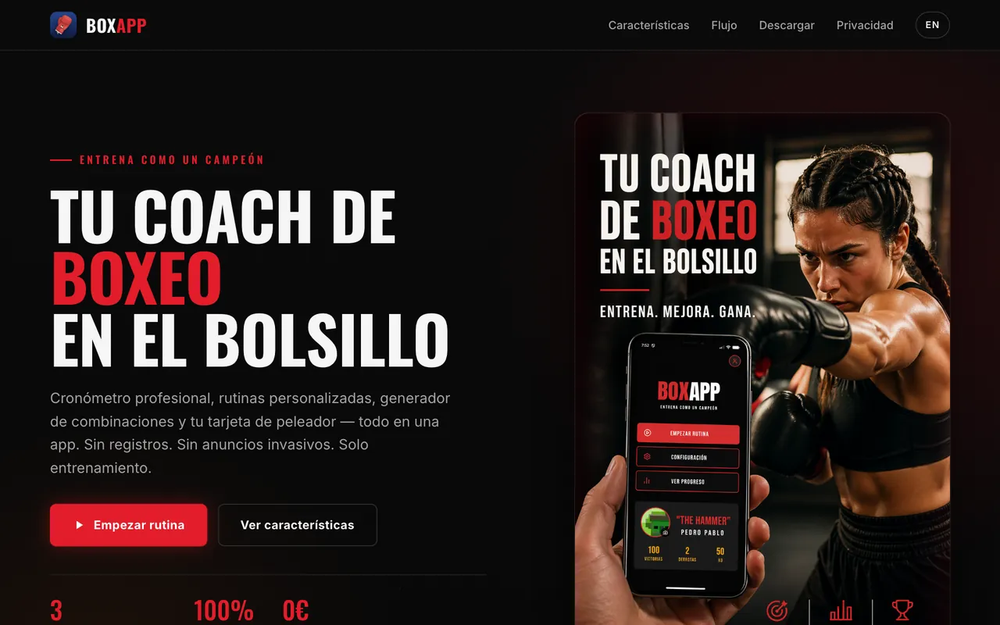

En vivo

BoxApp — Entrenamiento de boxeo profesional
App móvil en React Native: cronómetro de rounds con preparación y descanso, entrenador de voz (TTS) que canta combinaciones, tarjeta de peleador con peso y categoría, y gráficas de progreso. Gratis, sin registros y con los datos solo en tu dispositivo.